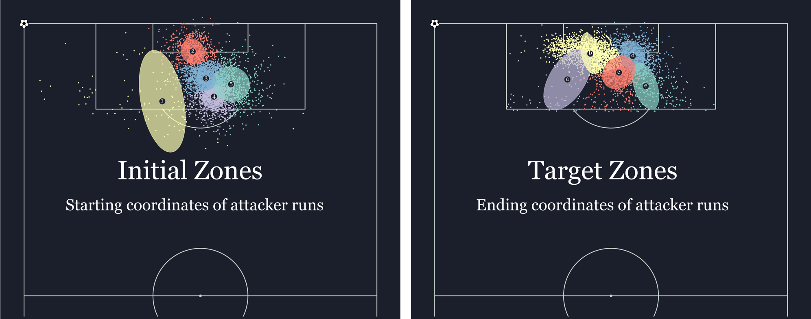
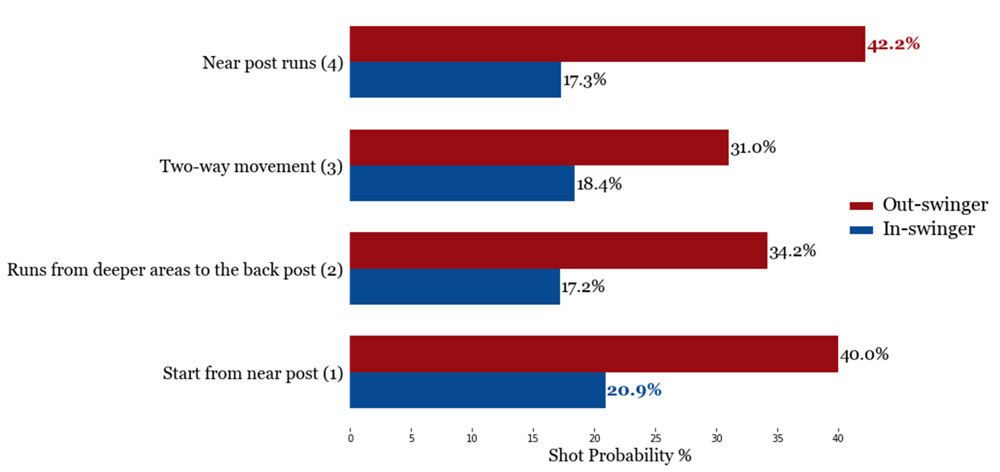
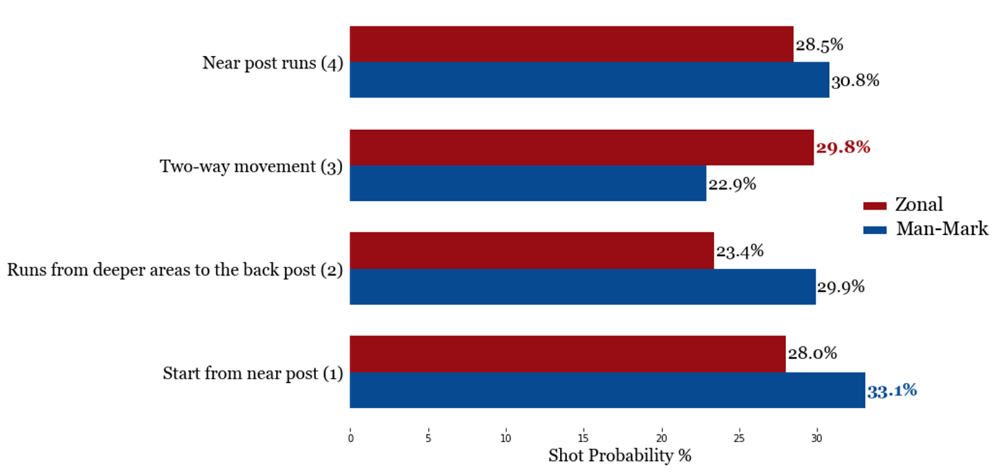

Causal Analysis of Corner Kicks
This work was selected as one of the Research Presentations at the OPTA FORUM 2024, held in London, on the 20th of March.
Brief Overview
This project proposes to use a Causal Framework to first estimate the effect of various granular level features on shot attempts, during corner kick situations. Then it shows how we can intervene on a combination of these features to distill the causal information from the data and compare how different Attacking setups perform against different Defensive Setups and also on different Corner Types.

How is this work beneficial?
A lot of things that happen during corner kicks aren't independent of each other, they are causally entangled. For eg., the attacking team knows the type of delivery they expect the corner taker to deliver, they also know the type of defensive setups they are coming up against. Utilizing a causal approach takes into account relationships like these during the modelling process. This work shows how we can use a Causal approach to account for various features and boil it down to a numerical percentage of how good a particular attack is against a particular type of defense or during a particular type of delivery. Thus better guiding the analysts/coaches on what the optimal matchups are, against a particular opposition.
We take inspiration from the work of Laurie Shaw and utilize a Causal framework to solve one of their proposed future works, which was to quantize how different Attacking setups performed against different Defensive Setups.
The current iteration of the work uses only categorical features due to limited time availability and labelled data. The main value of the proposed framework is that it can be extended to continuous features as well. xG, Goalkeeper positioning, ball speed are some continuous features that can be integrated. One of the main advantages is that the data from the training grounds can also be used as part of this analysis. As these training sessions provide the perfect environment for performing Controlled Randomized tests.
Features
How did we come up with the Proposed Causal Graph?
All the features/variables are assumed to be impacted by other features from which they have an incoming edge. All the 5 variables, Corner Type, Attacking Setup, Defense Type, Closely Marked & Dynamic Movement are assumped to be impacting Shot Attempts during a corner situation.
The way the team plans to attack the corners is assumed to be impacted by the type of delivery they expect and the defensive setup they are up against. Whether the attacking team needs to make movements to get to the ball location is dependent on the way they setup and the type of delivery they expect to be put in. This, then further impacts whether the defenders are able to closely guard the attackers or not, which is also impacted by how the defensive team sets up.
The following 6 features were extracted from the combination of Opta's tracking and events data. The original dataset comprised of 100 matches from the 2021-22 Ligue 1 season. The original and the extracted data are both proprietary, thus cannot be shared.
Already recorded in the data:
- Shot Attempt:
- 0 – No shot
- 1 – Goals / Attempt Saved / Miss
- Corner Type:
- 0 – Inswinger
- 1 – Outswinger
Extracted using Clustering some features:
- Defense Type:
- 0 – Man Mark
- 1 – Zonal
Gaussian Mixture Models were used to find two clusters based on the following 3 features:
- Cost - Distance between attacker & their most closest marker.
The closest marker was initially found for every attacker in the box using the Linear Sum Assignment problem, the defensive players (minus Goalkeeper) and attacking players being the two different sets. - Number of attackers within 6 yards of goal
- Number of defenders within 6 yards of goal
Kmeans clustering method was also tried using the above features, along with a GMM model which only used the Cost as its feature. On analysis (eye-test) it was seen that the GMM with the above 3 features performed the best.
- Attacking Setup:
- 1 - Players start from near post
- 2 - Players make runs from deeper areas to the back post
- 3 - Players make two-way movement
- 4 - Players make near post runs
Here we follow a similar approach to the research A Playbook for Corner Kicks. Active attackers (players from the attacking team finishing their runs inside the penalty box) are first found and then the feature vectors for all the active attackers are computed based on their start and end zones. GMMs were trained on the start and end coordinates of the players to initially find those clusters.
Starting and Ending zones of 'Active Attackers'
How our method differs from their proposed method is in the utilization of these feature vectors of corner kicks to find clusters. Their proposed method uses an Agglomerative Clustering model to cluster the features of all the corner kicks. After trying that approach, we found it harder to comprehend these clusters and then categorized them into clusters that made sense for human understanding. In our approach we use a KMeans clustering, so that we could then use the centers of these clusters to find the start and end locations where most active attackers were found. These cluster centers then were used as references for the naming of the attacking clusters.
Cluster 1 - Players start from near post
Cluster 2 - Runs from deeper areas to the back post
Cluster 3 - Players make two-way movement
Cluster 4 - Players make near post runs
Extracted using Thresholding the data distribution:
- Closely Marked:
- 0 – No
- 1 – Yes
The distribution of the distances between the active attackers and their closest markers was seen and a threshold of 1.45m (the median of the distribution) was used as the value to determine whether the players were closely marked or not. The value of this feature is No, if distance of more than half the active attackers was found to be more than the median distance.
- Dynamic Movement:
- 0 – No
- 1 – Yes
The frames where the ball started from the corner kick spot, till the time it reached the closest edge of the penalty box were looked at for this feature. If more than half of the active attackers had speed more than the average speed found in the data distribtuion, we conclude that dynamic movement was made otherwise not.
Results
Based on the dataset used, Outswinging corners were seen producing more shots on goal than In-swinging corners. In order to see some exploratory analysis of the different features in the dataset, I would recommend checking out the slide deck or the presentation video.
Matchups - Attack vs Corner Type
Near post runs, as well as players being positioned close to the near post were seen the best shot producing options on Out-swinging corners. Near post runs were found to be the best attacking choice for in-swining corners as well.
Matchups - Attack vs Defense Type
On comparing how different types of attacking setups did against the different defensive setups, we saw that against Zonal defenses, when the attackers made two way movements, they were successful in producing more shots. Near post runs were once again seen to be fruitful, this time when facing man-marking defenses.
Conclusion
The idea behind this project was to find a way to be able to quantify how different attacking setups fare against different defensive setups. Thus being able to give a data point to the coaches, of specific matchups to focus upon, against different oppositions. This framework enables us to do that while also conditioning on various intertwined features that impact shots during corner kicks. As mentioned above, the framework provides the flexibility to add on more granular level features, continuous or categorical, and condition on them. The addition of such features will also give us the ability to further compute counter factuals for each situation as well. Automated feature extraction and the use of a causal approach, that provides explainable & actionable insights, are the main advantages of this work.
Get In Touch
If you want to know more about me or my work, please don't hesitate in reaching out.